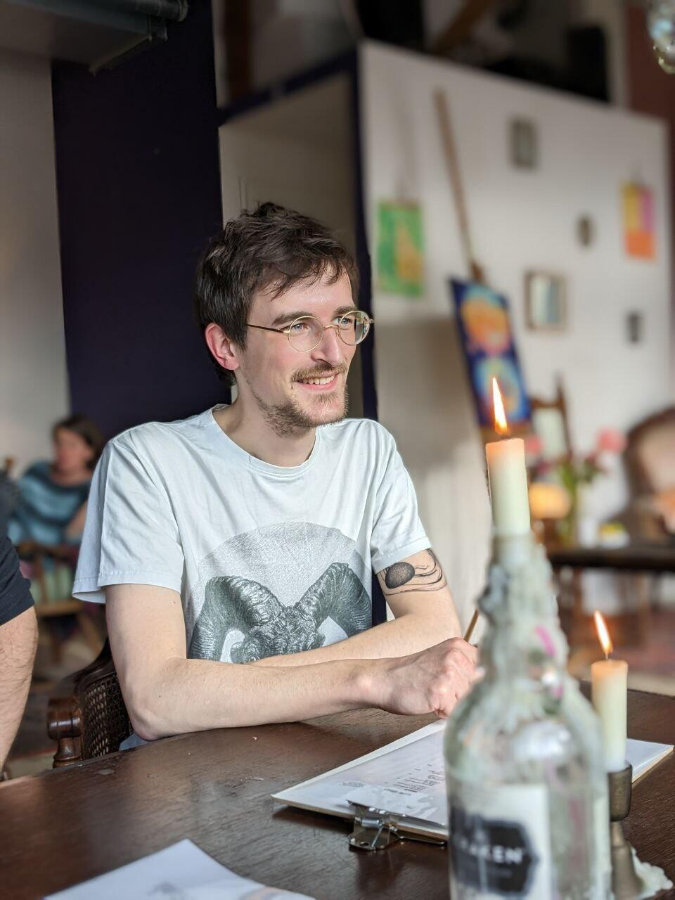
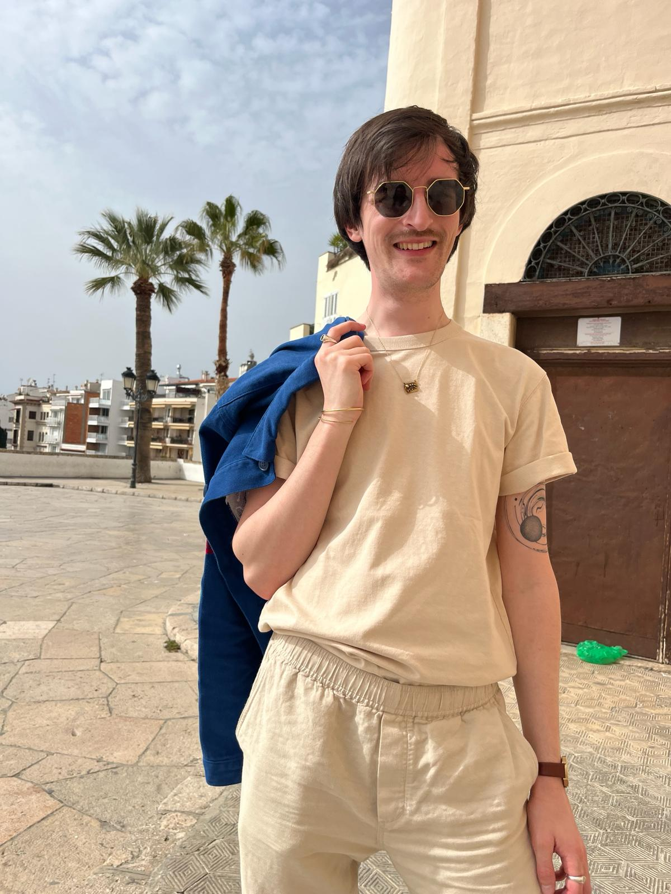

At the end of May, I left the Netherlands after living there for about five years. I started a new job in Hamburg in June and now I'm sitting in my parents' garden, giving this page a new look and writing this note. I meant to move to Hamburg, too, but its housing situation is the height of perversion and, so far, I didn't manage to find a modest apartment. And so instead I'm looking for one in Leipzig together with my sister.
kleinfreund.single.fyi
Hi, I'm Philipp.
32. German. Based in Leipzig (soon), Germany. Previously in Eindhoven, Netherlands. Frontend developer.
Straight. He/him. ~180 cm. Extroverted & quite shy. Communicative, a good listener. A six, maybe a seven; a strong nine if you like my humor.
Very single.


This page is meant to be as unfiltered and as subtext-free as I can manage.
# Jump to heading + I like
-
meeting my friends is the single most important thing to me; it's my favorite hobby
- love you
-
music
- i love lots of music and I try to keep a record of what I like throughout the year
- Basketball Shoes from Black Country, New Road's album Ants From Up There
- Sleep from Godspeed You! Black Emperor's album Lift Your Skinny Fists Like Antennas to Heaven is perhaps one of the greatest songs of all time
-
web development
- i have a website: kleinfreund.de
- i publish npm packages (retrieve, yet-another-color-picker, vue-accessible-color-picker, …)
- i'm generally very interested in web development, contribute to open-source software occasionally and used to love computers before you all made them a nightmare
-
books (which I also keep track of nowadays)
- sci-fi (sentient robots! space! monumental ideas!)
- some popular science (to look cool in the café)
- some literary fiction (to look cool in the café also)
- the Saga comic series (too horny for the café)
- space stuff, nature, photography, art, cool rocks
- pancakes, cinnamon rolls, wine, spending entirely too much time in cafés
# Jump to heading − I don't like
- homophobes, transphobes, racists, misogynists, fascists, macho men
- people who make their cars/bikes loud as fuck
- people who smoke in public places (yes, generally; and yes, even bars and clubs), especially near others or people who eat, and worst, near children
- AI (just leave me alone)
- (surely to be continued)
# Jump to heading ? I want
A companion, a friend, a lover. To not be alone. But: Dating is fucking weird.
(Mu-An). And it's certainly not working for me.
A relationship would be nice. Don't mind someone older. Not opposed to something casual (though I don't know what that's like, so perhaps I won't like it; one can only try). Would prefer something long-lasting.
I need physical touch. This isn't about sex. Well, it can be. The point: I want someone who's willing to be close to me. If that's not you; that's not us.
# Jump to heading ! To consider
I greatly dislike doing unfamiliar things alone (traveling, new hobbies, going to bars, etc.). I very much love doing unfamiliar things together. I'm independent, but this aspect can make me depend on others sometimes. You might not like that.
Want to know more? Write me @kleinfreund or find my email.
Want a page like this? single.fyi.
Bye!
# Jump to heading Recent
Things I currently like:
-
Music:
- Charli XCX: BRAT
- The Lemon Twigs: A Dream Is All We Know
- Black Country, New Road: Ants From Up There
- Natalia Lafourcade: De Todas las Flores
-
Movies:
- Wim Wenders: Perfect Days
- Greta Gerwig: Barbie
- Christopher Nolan: Oppenheimer
- Daniel Kwan + Daniel Scheinert: Everything Everywhere All at Once
-
Books:
- Gabrielle Zevin: The Storied Life of A.J. Fikry + Tomorrow and Tomorrow and Tomorrow
- Tara Westover: Educated This one's simply incredible. Heart-stopping and -starting.
- Arkady Martine: A Memory Called Empire + A Desolation Called Peace
- Cixin Liu: Remembrance of Earth's Past (The Three-Body Problem trilogy) most profound piece of sci-fi I read
-
Games:
- Elden Ring
- Baldur's Gate 3
- The Chronicles of Myrtana: Archolos
-
Perfumes:
- Xerjoff: XJ 1861 Naxos
- Marc-Antoine Barrois: Ganymede
- Dyptique: Eau Rose
- Jewelry:
-
Shows:
- Ronald D. Moore, Matt Wolpert, Ben Nedivi: For All Mankind
- Alex Horne: Taskmaster
- Tony Gilroy: Andor